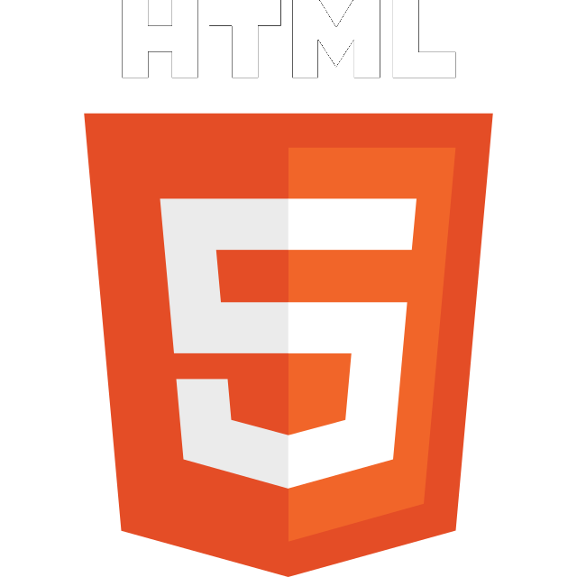
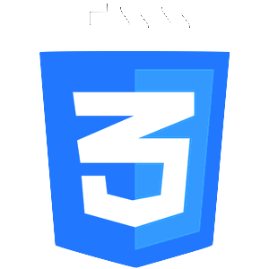
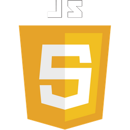
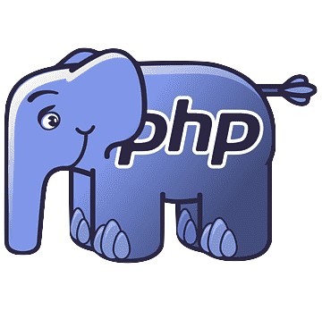
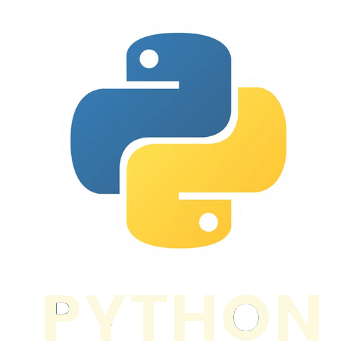
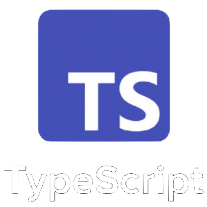
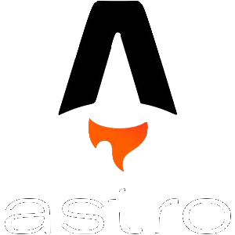
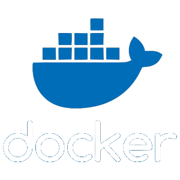
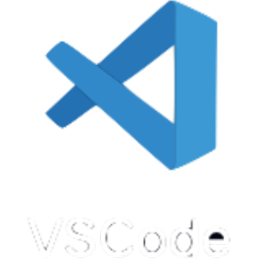

Hola, soy Jeison
Estudiante de Ingeniería en Sistemas y Computación. Entusiasta en crear soluciones web revolucionarias.
 8.41.52 a.m..png)
Estudiante de Ingeniería en Sistemas y Computación. Entusiasta en crear soluciones web revolucionarias.
Experiencia ↓
2021 - Presente
Primeros pasos en el desarrollo web aprendiendo en mis clases de programación de págnas web y de forma autodidacta con cursos virtuales, donde creé algunos proyectos personales los cuáles me abriran el conocimiento para desarrollar mejores soluciones tecnologias.
Mis proyectos más emocionantes y creativos. Cada proyecto es el resultado de mi dedicación y pasión por la programación, y estoy encantado de compartirlos contigo. Descubre cómo transformo ideas en realidades digitales. ¡Explora, inspira y crea con mis proyectos web!
Hola 👋, soy Jeison Amparo, estudiante de Ingeniería en Sistemas y Computación y un entusiasta del Desarrollo Web. Inicié en la programación como un pasatiempo hace poco más de 2 años. Actualmente estoy aprendiendo nuevas tecnologias capaces de solucionar problemas en nuestra sociedad y potenciar mi conocimiento con la ayuda de la inteligenica artificial.
Entre mis logros destaco en el pensamento critico, trabajo en equipo y capacidad de adaptabilidad, logrando así garantizar que mi trabajo sea de calidad y tener un flujo de trabajo de calidad.
Como proyecto personal realizo proyectos de programación. Cuando te dedicas a aprender y realizar soluciones que tengan en un impacto en la sociedad aprendes mas y tienes la oportunidad de crecer a nivel laboral y personal. Mi objetivo además de seguir mejorando mis habilidades es ayudar a otros con mis experiencias.
En mi viaje por el mundo del desarrollo web, he cultivado experiencia y habilidades en una variedad de tecnologías. Mi stack tecnológico incluye:









